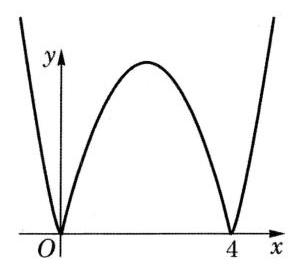
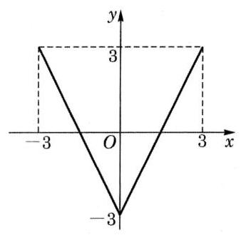
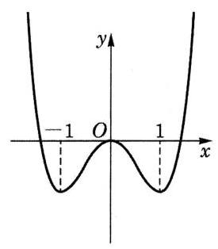

- 函数的概念：
(1) 设 是一个非空的数集，如果按照某种确定的对应关系 ，使对集合 中任意给定的 ，都有唯一的实数 与之对应，就称这个对应关系 为集合 上的一个函数。
(2) 定义域和对应关系是函数的两个重要要素。函数的值域由其定义域和对应关系决定。两个函数的定义域和对应关系都相同（形式上未必相同）时，两个函数是相同的。
(3) 函数的图像是表示函数性质的直观有力的工具。
- 函数的性质：
(1) 如果对定义域 中的任意给定的 ，均有 ，并且 ，那么称 是一个偶函数；如果对定义域 中的任意给定的 ，均有 ，并且 ，那么称 是一个奇函数。函数的奇偶性刻画了函数图像关于原点及 轴的对称性。
(2) 对于定义在 上的函数 ，设区间 是 的子集。对于区间 上的任意给定的两个自变量的值 、，当 时，如果总有 （），就称函数 在区间 上是严格增函数（增函数）；如果总有 （），就称函数 在区间 上是严格减函数（减函数）。这种单调性刻画了函数图像上升或下降的趋势。
(3) 设函数 在 处的函数值是 。对于定义域内任意给定的 ，如果不等式 都成立，那么 叫做函数 的最小值；如果不等式 都成立，那么 叫做函数 的最大值。最大值与最小值分别为函数图像的最高点与最低点的纵坐标。
- 函数的应用：
(1) 在建立函数关系时，需要注意其定义域。
(2) 依靠函数 ，可以用动态的观点来考察方程 的求解，以及不等式 的求解。
(3) 对于函数 ，若存在 ，且 ，则称 是函数 的一个零点。零点是指函数图像与 轴交点的横坐标。对于图像是连续曲线的函数，二分法是求近似零点的有效手段。
*4. 反函数：
(1) 反函数来源于解关于 的方程 所得到的对应关系。
(2) 如果函数 在定义域 上不同的 处所取到的函数值也不相同，那么 就存在反函数。在定义域上严格单调的函数必存在反函数。
(3) 函数 的图像与其反函数 的图像关于直线 成轴对称。
复习题
A 组
复习题A · 1
答案与解析收起 / 展开
复习题A · 2
- 判断下列函数 的奇偶性，并说明理由：
(1) ；
(2) ；
(3) （其中常数 ）。
答案与解析收起 / 展开
- (1)偶函数,理由略.
(2)奇函数,理由略.
(3)当 时,是偶函数,理由略；当 时,既不是奇函数又不是偶函数, 因为定义域不关于原点对称.
复习题A · 3
- 已知 、 是常数，而函数 为奇函数。求 、 的值。
答案与解析收起 / 展开
复习题A · 4
答案与解析收起 / 展开
- 在区间 上是严格增函数,而在区间 和区间 上是严格减函数.
复习题A · 5
- 分别作出下列函数的大致图像，并指出它们的单调区间：
(1) ；
(2) 。
答案与解析收起 / 展开
5.(1)大致图像如下:

在区间 和区间 上是严格减函数,在区间 和区间 上是严格增函数.
(2)大致图像如下:

在区间 上是严格减函数,在区间 上是严格增函数.
复习题A · 6
答案与解析收起 / 展开
复习题A · 7
- 已知 是常数，设 、 是二次方程 的两个实根。问：当 为何值时， 取到最小值？
答案与解析收起 / 展开
复习题A · 8
- 邮局规定：当邮件质量不超过 时，每 邮费 0.8 元，且不足 时按 计算；超过 时，超过 的部分按每 邮费 2 元计算，且不足 按 计算；同时规定邮件总质量不得超过 2000 g。请写出邮费关于邮件质量的函数表达式，并计算 和 的邮件分别收多少邮费。
答案与解析收起 / 展开
重的邮件收 2.4 元邮费, 重的邮件收 12 元邮费.
复习题A · 9
- 若函数 的图像都在 轴上方（不含 轴），求实数 的取值范围。
答案与解析收起 / 展开
B 组
复习题B · 1
- 已知 是奇函数，其定义域为 ；而 是偶函数，其定义域为 。判断函数 的奇偶性，并说明理由。
答案与解析收起 / 展开
复习题B · 2
- 设函数 ，当 时，其函数值恒大于等于零。求实数 的取值范围。
答案与解析收起 / 展开
复习题B · 3
答案与解析收起 / 展开
复习题B · 4
答案与解析收起 / 展开
复习题B · 5
- 已知 是定义在 上的奇函数，在区间 上是严格减函数，且 。求实数 的取值范围。
答案与解析收起 / 展开
复习题B · 6
- 已知 及 。定义 如下：当 时，；而当 时，。求函数 的最大值。
答案与解析收起 / 展开
拓展与思考
拓展与思考 · 1
答案与解析收起 / 展开
【编辑补写／校订】
定义域为 ，函数在 、、 上分别严格递增。
证明：在上述任一区间任取 ，则
同一区间内分母恒为正。在外侧两个区间，；在中间区间，，故分子也为正。因此 。三个区间不可跨越无定义点合并。
拓展与思考 · 2
- 作出函数 的大致图像，写出它的单调区间，并证明你的结论。
答案与解析收起 / 展开
- 大致图像如下:

猜测该函数在区间 和区间 上是严格减函数,而在区间 和 上为严格增函数.
对任意给定的两个实数 ,都有 . 当 时, , ,因此 ,该函数在区间 上为严格减函数.
其余区间上单调性的证明从略.
【编辑补证】函数为偶函数，经过 、，两端趋于 。令 ，则 在 上严格递减、在 上严格递增； 在 上递减、在 上递增。按两个变化的方向复合，即得减区间 、，增区间 、，补全教参略去的其余三段证明。
拓展与思考 · 3
- 已知函数 为偶函数， 为奇函数，且 。求 及 的表达式。
答案与解析收起 / 展开
- .
【编辑补证】将原式中的 换为 ，利用奇偶性得 。与原式相加、相减即得上述表达式，代回可验证成立。
拓展与思考 · *4
*4. 设函数 的反函数是 。
(1) 如果 是奇函数，那么 的奇偶性如何？
(2) 如果 在定义域上是严格增函数，那么 的单调性如何？
答案与解析收起 / 展开
4.(1)在函数 的定义域 中任取一个数 ,因 的定义域是 的值域,故存在 的定义域 中的一个数 ,使得 .
因 是奇函数,故 ,从而 也在 的定义域中. 由于 ,且 ,它们互为相反数,因此 是奇函数.
(2)对于 中的任意给定的两个实数 ,设 ,即 . 如果 是严格增函数,那么当 时, .
如果 ,根据 的单调性得 ,与 矛盾,因此必有 ,即 . 这说明 是一个严格增函数.